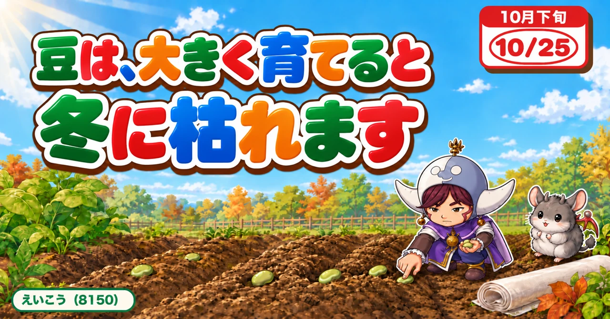
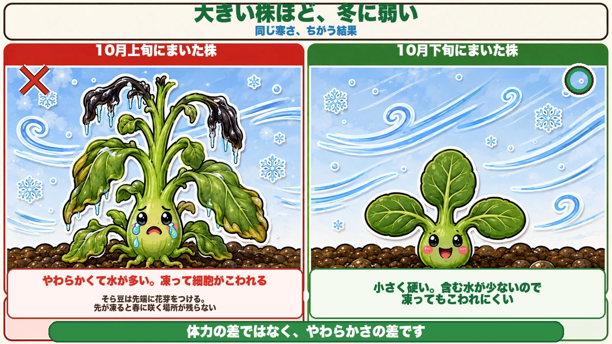
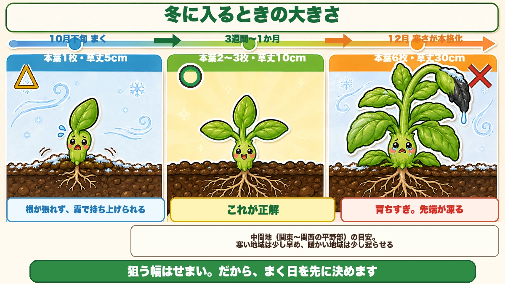
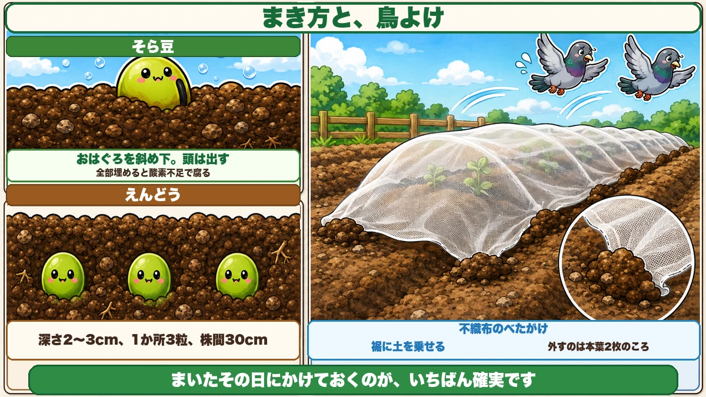
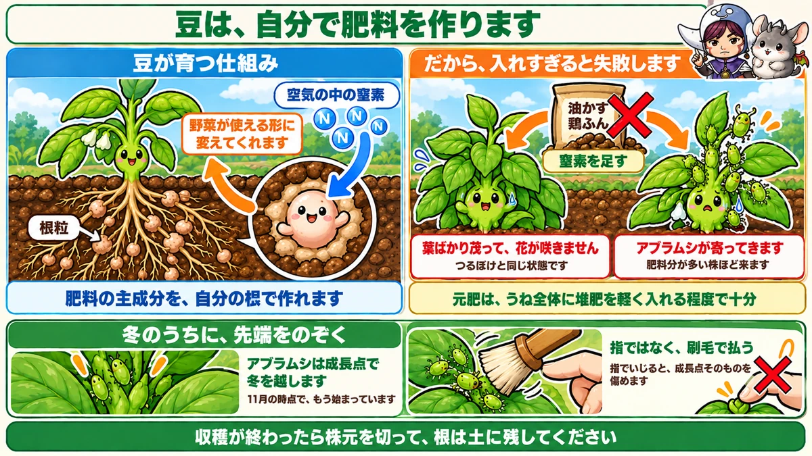
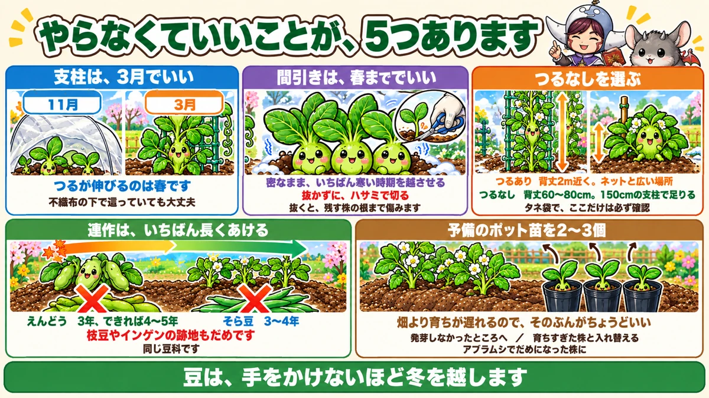

えんどうとそら豆のタネまき｜まく時期、冬越しの大きさ、深さとまき方、鳥よけ、肥料

どうも、8150（えいこう）です🌱 家庭菜園歴8年、理科の教員免許を持っていて、有機・無農薬で野菜を育てています。
📖 この記事の目次
この記事で分かること
- えんどう（スナップえんどう、きぬさや、グリーンピース）とそら豆は、秋にタネをまいて、冬を越させ、春から初夏に収穫する野菜です。
- まく時期のおおまかな目安は、そら豆が10月、えんどうが11月です。ただし、地域やその年の暖かさで変わります。
- 冬に入るときに大きく育ちすぎていると、冬の寒さで傷みやすくなります。冬越しの目安は、えんどうが草丈10〜15cm、そら豆が15〜20cmくらいです。
- タネは、まいたあとにしっかり押さえます。土が湿っていれば、まいたあとの水やりはいらない、という説明もあります。
- 豆のタネは、鳥にねらわれやすいので、芽が出るまで不織布などをかけて守ります。
- 豆は根粒菌の力で窒素を取りこむので、肥料は控えめにします。ただし、まったくいらないわけではありません。
秋になると、ホームセンターの種売り場に、スナップえんどうやそら豆のタネが並びはじめますよね。春にたくさん実をつけてくれる豆は、家庭菜園でも人気の野菜です。
でも、豆の秋まきには、ほかの野菜とは少し違う考え方があります。ほとんどの野菜は「元気に大きく育てる」のが目標ですが、秋まきの豆は違います。「大きく育てるほど、冬を越しにくい」ということです。
この記事では、えんどうとそら豆の秋まきについて、まく時期から冬越し、まき方、鳥よけ、肥料まで、順番に書いていきます。説明が分かれているところは、両方の考え方を並べておきますね。

早見：えんどうとそら豆の秋まきの基本（ひと目で分かる目安）
まく時期の目安
- そら豆：10月ごろ
- えんどう：11月ごろ（関東では11月中旬ごろが最適、という説明もある）
- 寒い地域：えんどうは春まきが一般的。そら豆の秋まきは難しい、という説明
冬越しのときの大きさの目安
- えんどう：草丈10〜15cmくらい
- そら豆：草丈15〜20cmくらい
- どちらも「あくまで目標値」と説明される
まき方の目安
- えんどう：1か所に3〜4粒。深さは1〜2cmくらい
- そら豆：1か所に1〜2粒。黒い筋（おはぐろ）を下向きか斜め下向きにして、豆が見え隠れするくらいの深さに
- まいたら、しっかり押さえる
なぜ、大きく育てすぎないほうがいいのか
大きい苗ほど、冬の寒さを受けやすい
豆の秋まきでは、冬に入る前に大きく育てすぎないことが大切だ、と説明されます。秋のうちに株を大きくしてしまうと、冬の冷たい空気に当たって、寒さの影響を受けてしまう、という説明です。
えんどうは、理想としては草丈10cmくらいがよい、と言われる、という説明もあります。上に伸ばさないように、まだ支柱やネットを立てずに、できるだけ低いままにしておく、という考え方です。
大きくなっても、冬が越せないわけではない
ただし、理想より大きくなってしまったからといって、冬を越せないわけではありません。冬越しの対策を少ししっかりめにしてあげれば、冬は越せる、と説明されます。「大きいと必ず枯れる」ではなく、「大きいと守る手間が増える」と考えておきましょう。
冬の対策は「温める」より「風をやわらげる」
冬越しの対策は、温めるという考え方ではなく、冬の北風にさらされるのをやわらげるもの、と説明されることがあります。豆は寒さそのものには比較的強く、冷たい風に当たることで傷みやすいからです。

まく時期と、冬越しの大きさ
そら豆は10月、えんどうは11月
おおまかに言えば、そら豆は10月、スナップえんどうは11月にタネをまく、と説明されます。スナップえんどうの種まきは、関東ではだいたい11月中旬ごろが最適、という説明もあります。
暖かい年は、育ちすぎに注意
暖かさが長引く年には、適期にまいても、年内に育ちすぎてしまうことがあります。その年の気温を見ながら、まく時期を少し遅らせることを考えるのも、ひとつの方法です。平均気温が15度を下回るころを、判断の手がかりにする、という説明もあります。
寒い地域は、春まきも
寒い地域では、えんどうは春にまくのが一般的で、そら豆の栽培は難しい、と説明されます。住んでいる地域の気候に合わせて、秋まきにするか、春まきにするかを決めましょう。迷ったら、タネの袋の裏にある、地域ごとのまき時の表を確かめてください。寒い地域、ふつうの地域、暖かい地域で、まく時期が分けて書かれていることが多いです。
冬越しの大きさは「目標値」
冬越しのときの大きさは、スナップえんどうは草丈10〜15cm程度、そら豆はそれより少し大きい15〜20cm程度で冬を迎えられるのが理想、と説明されます。ただし、これは「あくまで目標値」とされています。
12月の初めの時点で、そら豆が10cm未満ならちょうどよく、15cmくらいまで育っていると少し育ちすぎ、という見方もあります。見ている時期によって、評価が違うことがあるんですね。
芽が出るまでの日数
スナップえんどうは、タネをまいてから1週間前後で芽が出る、と説明されます。5〜10日くらいで芽が出る、という説明もあります。ただし、気温が15度以下になると、芽が出るのが非常に遅くなる、と説明されます。
2週間たっても芽が出ない場合は、土を軽く掘って、タネの状態を確かめてみましょう、という説明があります。タネが腐っていたり、鳥に食べられていたりしたら、まき直します。
えんどうの芽が出るのにちょうどよい温度は、18〜20度、または20度前後、と説明されます。寒さには強いけれど、芽を出すときには、ある程度の温かさが必要なんですね。
秋まきと春まき
えんどうは、冬の寒さに当たることで、春に花をたくさんつける、と説明されます。そのため、秋にまいて冬を越させるほうが、春にまくより収穫量が多くなる、という説明です。
秋にまけなかった場合は、春まきもできます。暖かい地域なら、2月中旬から3月中旬にまいて、5月ごろに収穫する、という例があります。ただし、秋まきに比べると収穫は半月ほど遅れ、収穫量も少なくなる、と説明されます。
苗を買うなら、小さめのものを
秋に苗を買って植える場合は、背丈が15cm以上になってしまっているものは冬越しがうまくいかないので、10cm以内のものを選んで植えるように、という説明があります。大きく立派な苗のほうがよさそうに見えますが、冬を越す豆の苗は、小さめを選ぶのがコツです。

まき方
手順1：まく場所を整える
豆は、日当たりと風通しがよく、水はけのよい場所を好みます。水はけの悪い畑なら、畝を少し高めにしておきましょう。前の野菜の肥料が残っている場所なら、新しい肥料はほとんどいりません（あとで書きます）。
手順2：えんどうは、1か所に3〜4粒
えんどうは、マルチの穴や、まき穴1か所に、3〜4粒ほどまきます。育苗用のポットにまく場合は、9cmのポットに3粒ほどまいて、最後は2本にする、という例があります。直まきでは1か所に4粒まいて、最後は2本にする、という例もあります。
手順3：えんどうの深さ
えんどうのタネは、押しこんで1cmくらい埋める、という説明と、直まきで2cmくらいの深さにする、という説明があります。深くしすぎると、タネが腐ったり、芽が出にくくなったりします。
手順4：そら豆は、おはぐろの向きに気をつける
そら豆のタネには、「おはぐろ」と呼ばれる黒い筋があります。ここから根が出てきます。おはぐろを下向き、または斜め下向きにして、豆が少し見え隠れするくらいの深さに置く、というのが通常の置き方として紹介されています。
ただし、タネの色でおはぐろが分かりづらい場合は、横向きでもかまわない、気にせずに植えても特に問題はない、という説明もあります（あとで書きます）。
手順5：そら豆は1か所に1〜2粒
そら豆は、1か所に2粒まく例が紹介されています。そら豆のタネは1粒が大きく、値段も高めなので、1粒ずつまいて、別に予備の苗を用意しておく、という選び方もあります。
手順6：まいたら、しっかり押さえる
タネをまいたら、土をかぶせて、しっかり押さえます（鎮圧）。押さえが足りないと、タネが表に出てきてしまう、と説明されます。少し押しすぎかなと思うくらいで大丈夫、という説明もあります。手のひらをまっすぐ開いて、全体を押さえ、土の水分を豆にしっかりまとわせるイメージです。
手順7：水やりは、土の湿り具合で
まいたあとの水やりは、説明が分かれています。
- よほど乾きやすい畑でない限り、土を少し掘って湿った土が出てくるなら、水やりはいらない、という説明
- 過去1週間以内に雨が降っていれば、種まきのときも水やりはいらない、という説明
- まいたあと、上から水をしっかりやる。翌日に雨が降るなら省く、という説明
土が湿っているなら水はやらず、乾いているならやる、と考えるのが分かりやすいと思います。
水のやりすぎで、タネが腐る
豆のタネは、水分の多すぎる状態を嫌います。ふつうの野菜と同じように、まいたあとにたっぷり水をやったら、豆が腐って芽が出なかった、ということがよく起きる、と説明されます。水をやりすぎると、スナップえんどうのタネは1週間もしないうちに腐ってしまう、という説明もあります。土が白っぽく乾いているときだけ、軽く水をまく程度にしておきましょう。
マルチを張ると管理が楽
豆の畝にマルチを張っておくと、土の水分が外に蒸発しにくくなり、雨の泥はねで葉が汚れて病気になるのも防げる、と説明されます。マルチで水分が保たれるので、冬越し中の水やりもほとんどいらなくなります。
芽出ししてからまく方法も
タネを水につけてから、湿らせた紙の上に置いて芽（根）を出させ、それからまく、という方法も紹介されています。芽が出たのを確かめてからまくので、芽が出ないタネをまいてしまう心配が減ります。ただし、出てきた根はとても折れやすいので、まくときはやさしく扱いましょう。
この方法は、タネの準備のしかたの一つです。まいたあとの水やりとは別の話なので、湿った土にまいたなら、水を足しすぎないようにします。
そら豆の苗を買うときは
そら豆の苗を買うときは、葉の裏や新しい芽の先に、アブラムシがついていないかを必ず確かめましょう、という説明があります。苗についたまま畑に持ちこむと、春に一気に増えてしまうことがあります。
鳥よけ
豆のタネは、鳥にねらわれる
豆のタネや、出たばかりの芽は、鳥にねらわれやすいです。鳥がよく来る畑では、まいたタネが食べられてしまうことがあります。豆のタネは大きくて栄養がたっぷりなので、鳥にとってはごちそうなんですね。せっかくまいたのに芽が出ない、と思ったら、鳥に掘り出されていた、ということもあります。
芽が出るまで、不織布をかける
鳥がよく来る畑なら、まいた場所の上から不織布をかけて、芽が出るまで守ってください、と説明されます。不織布は、鳥よけのほか、土の乾燥を防ぐ役目もあります。
芽が5cmくらいになったら外す
芽が出て5cmくらいに育ったら、不織布を外しても大丈夫、という説明があります。かけたままにしておくと、中で苗が押さえつけられたり、暖かくなりすぎて育ちすぎたりすることがあります。
鳥よけと、冬の防寒は別の目的
まいたばかりのときの不織布は、鳥よけと乾燥防止のためのものです。冬の不織布は、冷たい風をやわらげるためのものです。目的が違うので、かける時期や外す時期も変わります。早くから暖めすぎないように、鳥よけの不織布は芽が出そろったら外し、冬の防寒は寒さが本格的になってから始めましょう。
冬の守り方
まずは株元を守る
冬越しの対策は、寒さが本格的になる12月ごろから始めます。株元に土を寄せ、枯れ草やわらを敷いておくのが基本です。風の強い場所では、不織布をかけたり、不織布や寒冷紗でトンネルを作ったりします。
大きさに合わせて守り方を変える
- 10〜15cmくらいの苗：防虫ネットや、あんどんで囲う程度でよい
- 15cmを超えた苗：穴あきのビニールと防虫ネットを重ねる
- 20cmを超えた苗：防虫ネットやビニールでしっかり守る
晴れて暖かい日は、ビニールの中が暑くなりすぎないように、すそをめくって風を通します。
少ない株なら、あんどんで囲う
株が少ないなら、150cmくらいの支柱を4本立てて、麻ひもを3段ほど張り、まわりに防虫ネットや不織布を巻いて囲う方法があります。
年内の花やわき芽
暖かい冬には、年内にわき芽が伸びたり、花が咲いたりすることがあります。小さいわき芽はそのままでよく、大きなわき芽がたくさん出ている場合は摘む、という説明があります。年内に咲いた花は、摘んでも、そのままでもよい、と説明されます。
間引きを遅らせると、冬の保険になる
冬のあいだは、間引かずに数を多めに残しておくと、冬に枯れるリスクを下げられる、と説明されます。近くに生えた株どうしが、風が吹いたときに支え合ってくれる、という説明もあります。
暖かくなって伸びてくる3月ごろ、または2月中旬までに、1か所に1〜2本になるように間引きます。早すぎる間引きは霜や寒さで減るリスクがあり、遅すぎる間引きはつるが絡んだり病気や虫が増えたりする原因になります。

肥料は控えめに
豆は、根粒菌と組んでいる
豆の仲間（マメ科）は、根に根粒菌（こんりゅうきん）という微生物をすまわせていて、その根粒菌が空気中の窒素を取りこんで届けてくれる、と説明されます。だから、窒素の肥料をたくさん与える必要はなく、むしろ与えすぎると、根粒菌の働きを悪くしてしまうことがある、という説明です。
肥料が残っている場所なら、元肥はいらない
前の野菜の肥料が残っている畑なら、えんどうには元肥を入れすぎないように、と説明されます。肥料が多すぎると、つるや葉ばかり茂って実のつきが悪くなったり（つるぼけ）、年内に育ちすぎたりするからです。
元肥を半分にする方法も
一方で、えんどうにも元肥を入れるけれど、ふだんの半分くらいにする、という方法もあります。根粒菌が窒素を供給してくれるので、ふだんより控える、という考え方です。
そら豆は、春に養分が必要になる
そら豆は、根粒菌から供給される窒素分だけでは育ちきらない場合があるので、やや肥えた土が必要になってくる、と説明されます。最初は元肥を入れずに育てておいて、春先に追肥をして肥料分を補う、という方法もあります。
「豆には肥料はいらない」と言い切るのではなく、「最初の肥料は控えめに、必要なら春に補う」と考えておきましょう。
追肥の時期
追肥の時期も、説明によって違います。
- そら豆は、有機の肥料を1月中に入れて、約2か月後の3月に効かせる、という説明
- えんどうは、1月は与えず、2月下旬と3月中旬に追肥する、という説明
野菜も、使う肥料の効き方も違うので、どちらが正しいというわけではありません。

知っておくと楽になること
支柱は、冬が明けてから
えんどうの支柱は、2月ごろから立てるのがよい、という説明があります。冬のあいだは支柱やネットを立てずに、低いまま冬越しさせるほうが、上に伸びすぎずにすみます。ネットは3月でも間に合う、という説明もあります。
年内は、間引かなくてもよい
初心者なら、年内は間引かずにそのままにしておき、節分を過ぎてから間引いてもよい、という説明があります。冬のあいだに一部の苗が傷んでも、残りの苗で補えるからです。
ただし、春になったら、株元を指でたどって、つるの分かれ目ではなく、地面から何本の株が出ているかを確かめて、込み合っていれば間引きます。間引きを忘れると、その影響が春に出てくる、と説明されます。
予備の苗を用意しておく
冬に一部の苗が枯れてしまう場合に備えて、ポットで予備の苗を育てておく、という方法があります。別の場所に少し遅めにまいておいて、枯れた株と差し替える、という案も紹介されています。
そら豆は、育ちすぎたら摘心
そら豆が育ちすぎてしまった場合は、先を摘む（摘心する）方法があります。下から葉を数えて、葉が6枚以上のものは6段目で摘心する、12月前半までにこの作業を終えるようにする、という説明があります。
えんどうは、なるべく切らない
えんどうは、摘心してもわき芽は出ることは出るけれど、それほど収穫が望めないので、なるべくなら切らないほうがよい、と説明されます。育ちすぎたえんどうは、不織布をふわりとかけて、防虫ネットを重ねて守る、という方法があります。このとき、苗を圧迫しないようにすることが大切です。
えんどうは、つるありとつるなし
えんどうには、つるが長く伸びる「つるあり」と、あまり伸びない「つるなし」があります。つるなしは、背が低く管理が楽なので、プランターや狭い畑に向いていて、初めての方におすすめされます。つるありは2m以上の支柱が必要になりますが、長く収穫できます。タネの袋で、どちらか確かめてから準備しましょう。
そら豆の春のわき芽は、本数をしぼる
春になると、そら豆の株元からわき芽が6〜7本出てくることがありますが、全部育てると、よいそら豆にならない、と説明されます。多くても5本くらいにしぼる、という目安があります。
豆の跡地には、豆を続けない
えんどうは、豆の仲間の中でも連作障害が出やすい、と説明されます。前に枝豆やいんげんを育てた場所も、豆の仲間が続くことになるのでおすすめできない、という説明があります。
収穫が終わった根は、取り切らなくてよい
収穫が終わったあと、株を抜くときに、土の中に残った根を全部きれいに取り除く必要はない、と説明されます。多少残っても構わない、という説明です。根を残して、次の野菜に利用する、という考え方もあります。
そら豆の摘心は、葉の数え方に注意
そら豆の摘心の目安で、「本葉3枚で」という説明と「葉5枚で」という説明を見かけることがあります。この違いは、最初に出てくる葉（初生葉）を数に入れるかどうかの違いだ、という説明があります。豆の仲間は、タネの中の子葉のあとに、初生葉が出て、それから本葉が出てきます。説明を読むときは、どこから数えているかに注意しましょう。
そら豆のアブラムシは、成長点で冬を越す
そら豆につくアブラムシは、成長点の、葉と葉が重なっているあいだに潜んで冬を越し、暖かくなると一気に増える、と説明されます。冬のあいだも、ときどき成長点の葉のあいだをのぞいてみましょう。肥料が多いとアブラムシを呼びやすい、という説明もあります。
秋まきの豆の1年（例）
秋にまく豆の、おおまかな流れの例です。地域やその年の気候で前後するので、目安として読んでください。
10月〜11月：タネまき
10月にそら豆、11月にえんどうのタネをまきます。芽が出るまでは不織布で鳥よけをし、芽が5cmくらいになったら外します。
12月：冬越しの準備
寒さが本格的になってきたら、株元に土を寄せ、わらや枯れ草を敷きます。風の強い場所では、不織布やネットで囲います。そら豆が育ちすぎていたら、12月前半までに摘心します。
1月：寒さのいちばん厳しい時期
霜柱で苗が浮いていないか見回ります。そら豆の追肥を1月中に済ませる、という例もあります。
2月〜3月：支柱と間引き
暖かくなってきたら、えんどうの支柱やネットを立て、つるをからませていきます。込み合っていれば、1か所に1〜2本になるように間引きます。春の追肥もこのころです。
4月〜6月：収穫
花が咲いて、さやがふくらんできたら、収穫の時期です。とり遅れないように、こまめに収穫しましょう。
失敗の見分け方
芽が出ない
鳥に食べられたか、深くまきすぎたか、押さえが足りなかった可能性があります。不織布で鳥よけをし、深さを確かめて、まき直しましょう。
年内に大きく育ちすぎた
まく時期が早すぎたか、暖かい年だった可能性があります。そら豆なら摘心を、えんどうなら防寒を強めて守りましょう。次の年は、まく時期を少し遅らせてみてください。
冬のあいだに、そら豆の先が傷んだ
成長点が死んでいなければ、わき芽が春に伸びてきて、回復してくることがある、と説明されます。すぐに抜かずに、春まで様子を見てください。
つるや葉ばかり茂って、実が少ない
肥料、特に窒素が多すぎた可能性があります。次は元肥を控えめにしてみてください。
そら豆の根が張らない
水はけの悪い畑でそら豆を育てると、どうしても根の張りが悪くなる、と説明されます。水はけが悪いと、根が腐る病気などにかかる危険も高くなります。次は、畝を高くするなど、水はけをよくしてから育ててみてください。
えんどうのつるの先が、冬に枯れた
寒さや冷たい風で、つるの先が傷んだ可能性があります。えんどうは、そら豆ほどわき芽で立て直すのが得意ではありませんが、株元から新しいわき芽が出てくることもあります。株元のわき芽が生きているかを確かめて、生きていれば春まで様子を見ましょう。わき芽もすべて枯れていたら、春まきの苗に植え替えることを考えます。
説明が分かれていること
そら豆のおはぐろの向き
- おはぐろを下向き、やや斜めにすることを重視する説明
- 気にしなくてもよい、筋が見えなければ横向きでもよい、という説明
まいたあとの水やり
- 湿った土なら、えんどうもそら豆も水はいらない、という説明
- そら豆は、まいたあとにたっぷり水をやり、芽が出る前に乾かさない、という説明
- えんどうは、まいたあとに水をやる。翌日雨なら省く、という説明
間引く時期
- 本葉が出た小さいうちに、はさみで切って減らす、という説明
- 初心者は年内そのままにして、節分を過ぎてからでもよい、という説明
防寒を始める時期
- 12月には防寒の対策をする、という説明
- そら豆は、本当に寒い1〜2月から。早く覆うと育ちすぎる、という説明
土の酸度の調整
- 豆は酸性の土を嫌うので、石灰で調整する、という説明
- ふつうに野菜が育っている菜園なら、特に必要ない、という説明
タネを水につけるか
- タネを水につけて、湿らせた紙の上で芽を出させてからまく、という方法
- 湿った土にまくなら、水を足さない、という説明
タネの準備のしかたと、まいたあとの水やりは別の作業です。
えんどうのまく日
- 長年の記録から、11月5日前後がいちばんよい、という説明
- 11月15日前後がいちばんよい、という説明
- 関東では11月中旬ごろが最適、という説明
同じチャンネルの中でも、話している人によって日にちが違います。話している人の地域や、その年の気候で変わるので、日付を決めつけず、冬越しのときの大きさから逆算して考えましょう。
よくある質問
Q. スナップえんどうと、きぬさや、グリーンピースの違いは？
A. どれもえんどうの仲間です。きぬさやは、豆が小さいうちにさやごと食べるもの。スナップえんどうは、豆がふくらんでもさやがやわらかく、さやごと食べられるもの。グリーンピースは、さやの中の豆を食べるものです。育て方はほぼ同じです。
Q. 苗を買って植えてもいいですか？
A. もちろんです。タネまきの時期を逃したときや、鳥が多い畑では、苗から始めると確実です。11月ごろから、ホームセンターにえんどうやそら豆の苗が並びます。
Q. 同じ場所で毎年育ててもいいですか？
A. そら豆は、同じ場所で続けて育てると育ちが悪くなる（連作障害）ので、最低3年、できれば4〜5年は間をあける、という説明があります。えんどうも、同じ場所での連作は避けたほうが安心です。
Q. 冬のあいだ、水やりはいりますか？
A. 畑なら、冬のあいだはほとんど水やりはいりません。ただし、晴れが続いて土の中まで乾いているような場合は、暖かい日の午前中に水をやりましょう。プランターは畑より乾きやすいので、土の乾き具合を見て水をやります。
Q. アブラムシがつきました
A. そら豆の新しい芽の先には、アブラムシがつきやすいです。成長点を傷めないように、刷毛などでやさしく落とす、という方法が紹介されています。ただし、落としてもまた戻ってくるので、根本的な解決にはならない、という説明もあります。こまめに見て、早めに対処しましょう。
Q. 支柱を立てないと、冬に倒れませんか？
A. 冬のあいだは、草丈を低く保つので、支柱がなくても倒れにくいです。春になって伸びはじめたら、2月ごろから支柱やネットを立てて、つるをからませていきます。
Q. プランターでも育てられますか？
A. 育てられます。プランターは土が少なく、冬は冷えやすいので、寒い夜は軒下に移すなどして守りましょう。えんどうは、つるを支えるネットや支柱が必要です。
Q. まいたタネが、土から出てきてしまいました
A. まいたあとの押さえが足りなかった可能性があります。もう一度土に押しこんで、上から手のひらでしっかり押さえてください。少し押しすぎかなと思うくらいで大丈夫です。
Q. つるなしのえんどうにも、支柱はいりますか？
A. つるなしでも、実がつくと株が倒れやすくなるので、短めの支柱やひもで支えてあげると安心です。つるありほど高い支柱はいりません。
Q. スナップえんどうは、いつ収穫すればいいですか？
A. スナップえんどうは、さやの中の豆がふくらんで、さやがぱんと張ってきたころが食べごろです。きぬさやは、豆が小さく、さやがうすいうちに収穫します。グリーンピースは、さやの中の豆が十分にふくらんでから収穫します。どれも、とり遅れるとかたくなるので、こまめに収穫しましょう。
Q. 鳥よけは、防虫ネットでもいいですか？
A. 防虫ネットでも、鳥がタネをついばむのを防げます。不織布は、鳥よけに加えて、土の乾燥を防ぐ役目もあります。どちらを使う場合も、すそをしっかり押さえて、すき間から鳥が入らないようにしましょう。
学ぶ🔬 豆の冬越しと、菌との助け合い
ここからは、豆と根粒菌のしくみについて、少しだけ深く書いておきます。読み飛ばしても大丈夫です。
寒さに当たると、花の準備が進む
えんどうは、冬の低い温度に当たることで、花を作る準備（花芽の分化）が進む、と説明されます。秋にまいて冬を越させるほうが、春にまくより収穫量が多くなると言われるのは、このためです。
冬のあいだ、地上の苗はほとんど大きくならないように見えますが、寒さを経験しながら、春に花を咲かせる準備をしているんですね。だから、冬を越すことそのものが、豆にとって大切な過程なのです。
根のつぶつぶは、菌の家
えんどうやそら豆の根を掘り上げてみると、小さなつぶつぶがたくさんついているのが見えます。これが根粒（こんりゅう）で、中には根粒菌という微生物が住んでいます。
空気中の窒素を、豆に届ける
窒素は、植物が葉や茎を育てるのに欠かせない栄養です。空気の中には窒素がたくさんありますが、植物はそのままでは使えません。
根粒菌は、空気中の窒素を取りこんで、植物が使える形に変えて、豆に届けてくれる、と説明されます。そのかわりに、豆は、葉で作った栄養の一部を根粒菌に分けています。おたがいに助け合っているんですね。
肥料が多いと、菌が働かなくなる
土の中に窒素の肥料がたくさんあると、豆は根粒菌に頼らなくても窒素を手に入れられます。すると、根粒菌の数が減ったり、働きが悪くなったりする、と説明されます。
豆に肥料を控えめにと言われるのは、肥料がもったいないからだけではなく、根粒菌にしっかり働いてもらうためでもあるんです。
豆のあとの土は、次の野菜に役立つ
豆を育てたあとの土には、根粒菌が取りこんだ窒素の一部が、根などと一緒に残ります。収穫が終わったあと、根を全部取り切らずに土に残しておくと、次の野菜の栄養として役立つ、という考え方があります。ただし、どれくらいの窒素が残るかは、畑によって違います。
おはぐろは、豆の「へそ」
そら豆の黒い筋（おはぐろ）は、豆がさやの中で、さやとつながっていた部分です。人間でいうと、おへそのような場所です。
タネが芽を出すとき、根はこのおはぐろの近くから出てきます。だから、おはぐろを下向きにまくと、出てきた根がそのまま下に伸びやすい、と考えられています。ただし、横向きでも上向きでも、根は自分で下に向きを変えて伸びていくので、それほど気にしなくてもよい、という説明もあるわけです。
「そら豆」という名前
そら豆は、さやが空に向かって上向きにつくことから、「空豆」と呼ばれるようになった、と言われます。さやは、実が熟してくると重みで下を向いてきます。さやが下を向いてきたら、収穫が近づいているしるしです。
まとめ
ここまで読んでくださって、ありがとうございます！
えんどうとそら豆の秋まきのポイントを、もう一度まとめておきます。
- そら豆は10月、えんどうは11月が目安。地域とその年の暖かさで調整する
- 冬越しの目安は、えんどう10〜15cm、そら豆15〜20cm。育ちすぎないように
- えんどうは1か所3〜4粒、深さ1〜2cm。そら豆はおはぐろを下向きか斜め下に
- まいたら、しっかり押さえる。土が湿っていれば水はいらない
- 芽が出るまで不織布で鳥よけ。5cmくらいになったら外す
- 肥料は控えめに。そら豆は春に追肥が必要なことも
- 支柱は冬が明けてから。年内は間引かなくてもよい
- 育ちすぎたら、そら豆は摘心、えんどうは防寒を強める
豆は、冬のあいだはほとんど動かないように見えますが、春になると一気に伸びて、たくさんの実をつけてくれます。秋にタネをまいてから収穫まで半年以上かかる、気の長い野菜ですが、そのぶん、春に初めてさやを摘んだときのうれしさは格別です。冬のあいだは、大きくしすぎないこと、冷たい風から守ること、この2つを覚えておけば大丈夫です。
まずは、住んでいる地域でのまきどきを確かめて、タネの袋を手に取ってみてください。つるありか、つるなしかも、忘れずに確かめておきましょう
そら豆のタネ
おはぐろを斜め下に向けて、頭を出して浅く植えます。深く埋めると腐ります。
![[商品価格に関しましては、リンクが作成された時点と現時点で情報が変更されている場合がございます。]](https://hbb.afl.rakuten.co.jp/hgb/56d217e1.4eab06f8.56d217e2.1513a8ec/?me_id=1204270&item_id=10005616&pc=https%3A%2F%2Fthumbnail.image.rakuten.co.jp%2F%400_mall%2Fnikkoseed%2Fcabinet%2Fseeds%2Fssk%2Fsskv1088h4701.jpg%3F_ex%3D240x240&s=240x240&t=picttext "[商品価格に関しましては、リンクが作成された時点と現時点で情報が変更されている場合がございます。]")

スナップエンドウのタネ
深さ2〜3cm、1か所3粒、株間30cm。発芽しないものがあるので多めにまきます。
![[商品価格に関しましては、リンクが作成された時点と現時点で情報が変更されている場合がございます。]](https://hbb.afl.rakuten.co.jp/hgb/552615f0.9cc2855e.552615f1.776f7de9/?me_id=1251188&item_id=10000610&pc=https%3A%2F%2Fthumbnail.image.rakuten.co.jp%2F%400_mall%2Fyonezawa%2Fcabinet%2Ftane01%2F10mame%2Fhorunsnack.jpg%3F_ex%3D240x240&s=240x240&t=picttext "[商品価格に関しましては、リンクが作成された時点と現時点で情報が変更されている場合がございます。]")
不織布
まいたらすぐかけてください。鳥の被害がほぼ消えて、発芽も揃います。
![[商品価格に関しましては、リンクが作成された時点と現時点で情報が変更されている場合がございます。]](https://hbb.afl.rakuten.co.jp/hgb/56bc237a.e97551b1.56bc237b.2513ed10/?me_id=1310260&item_id=10000879&pc=https%3A%2F%2Fthumbnail.image.rakuten.co.jp%2F%400_mall%2Fdiokasei%2Fcabinet%2F007fusyokufu%2F12g%2Fimgrc0092049705.jpg%3F_ex%3D240x240&s=240x240&t=picttext "[商品価格に関しましては、リンクが作成された時点と現時点で情報が変更されている場合がございます。]")
移植ごて
うねを整えるときに。豆は肥料を入れないので、堆肥を軽く混ぜる程度で十分です。